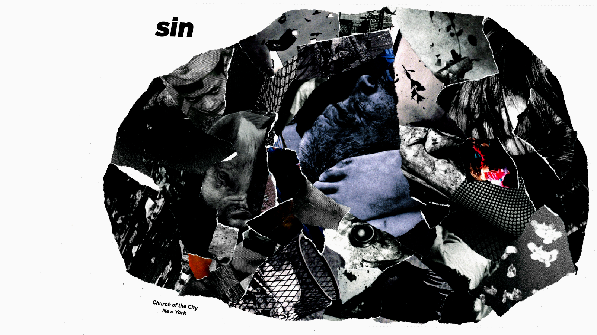
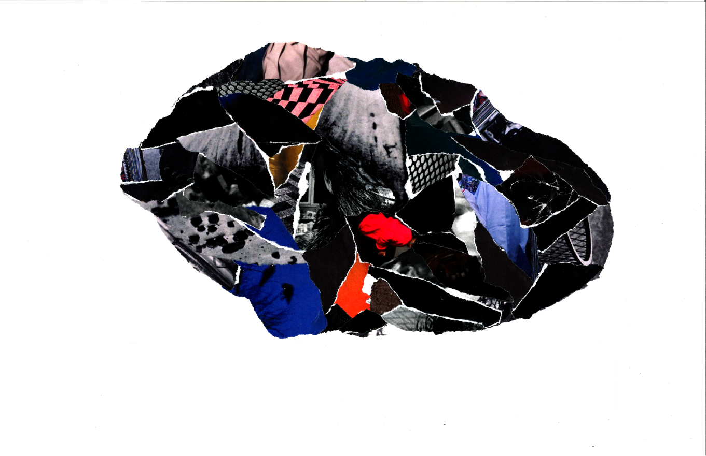
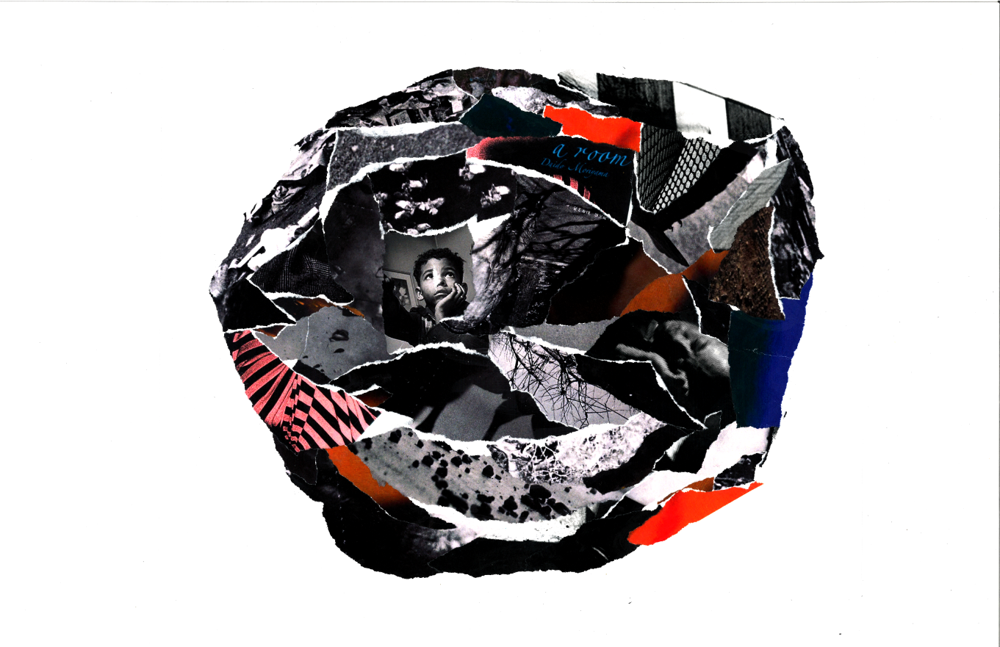
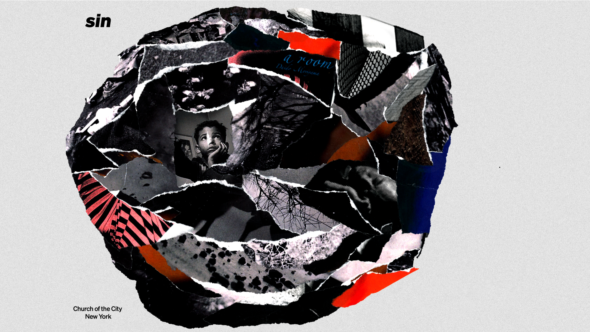
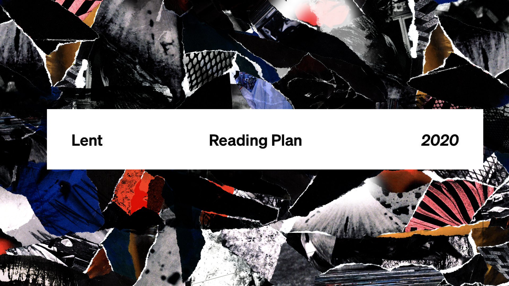

<!DOCTYPE html>
<html>
  <head>
    <meta name="viewport" content="width=device-width, initial-scale=1.0" />
    <title>Sin ~ Chris Lo</title>
    <link rel="stylesheet" type="text/css" href="style.css" />
    <script src="script.js"></script>
  </head>

  <body>
    <cl-header></cl-header>

    <div class="XLG splash sinmg">
      
    </div>

    <section class="bodybox">
      <h1 class="MED title">Sin Series</h1>
      <p>
        <i class="blockq"
          >At the core of the Christian faith lies the persuasion that the
          “others” need not be perceived as innocent in order to be loved, but
          ought to be embraced even when they are perceived as wrongdoers. As I
          read it, the story of the cross is about God who desires to embrace
          precisely the “sons and daughters of hell.”<br />- Miroslav Volf,
          Exclusion and Embrace, 81.</i
        >
        <br /><br />
        As we entered the season of Lent in 2020, Church of the City started a
        series of sermons based around creating a deep understanding of sin.
        <br /><br />
        Visually, my goal was to paint an unflinching portrait of human
        darkness. Inspired by the provocative imagery from 80's designers like
        Inoue Tsuguya and photographers like Daido Moriyama, I decided to
        illustrate each concept of sin through dark, crowd-sourced collages,
        filled with unsettling references and dark.
      </p>

      <h1>《&nbsp;Context&nbsp;》</h1>
      <br /><br />

      <p>
        Initially, Pastor Jon had imagined this to be a survey of all the Greek
        and Hebrew words translated as "sin" in the English version of the
        Bible… until he realized that if we went week-by-week, it would take the
        greater part of a year to explain all the nuance and depth. In the end,
        each of the many concepts was compiled into six thematic words.
        <br /><br />

        How does something so big, so heavy it needs to be defined in six weeks
        of sermons… become visualized? In a few concept meetings we talked about
        the chaotic, consuming nature of sin, but also how most modern
        Christians pivot—too quickly—into salvation. The thought was that by
        truly understanding what we're saved from, we can better understand what
        it means to be saved.
      </p>

      <h1>
        《&nbsp;<span class="fwid">i</span>nsp<span class="fwid">i</span
        >rat<span class="fwid">i</span>on&nbsp;》
      </h1>

      <p>
        Visual Inspiration for this series came primarily from some of the dark,
        high-contrast aesthetic of post-war Japanese graphic design. Japanese
        art and design of this time grappled with Post-Modern themes of hope and
        despair in the uneasy peace of a Nuclear Age. The glorification of
        modern progress and nuclear power in AstroBoy thus coexisted with the
        living memory of the "Pika-don" explosion of Hiroshima, while the
        explosive growth of consumer goods brands like Sony contrasted with
        similar growth of anti-establishment brands like Muji and Yohji
        Yamamoto.
        <br /><br />
        A primary example of this aesthetic is the work of designer Inoue
        Tsuguya. Across posters, album covers, and subway ads for clients like
        Commes des Garçons, Tsuguya pursued his own design style with deep
        commitment to avant-garde and surreal imagery. The end result was
        visually arresting work with an uncomfortable, mature playfulness,
        reflecting both a commitment to the newness of a Modern Age without
        losing refinement or personality.
      </p>
      
      <p>
        Secondary inspiration was drawn from many photographers of this era who
        explored similar themes of isolation, fragmentation, and tragedy. In
        Japan, Masahisa Fukase as one example explored dark themes of personal
        loss, love, loneliness, and depression. His photo series capture already
        dark subjects like pigs in a slaughterhouse, demolition, or flocks of
        ravens in trees at night… with measured yet evocative experimentation.
        His peer Daido Moriyama created series of high-contrast, jilted works to
        convert the fragmentary nature of modern life. Across the Pacific in the
        US, photographers like Gordon Parks captured violent scenes of anxiety
        and despair with sensitive, yet unflinching journalistic integrity.
      </p>
      
      <p>
        A third source of inspiration was a sort of gritty type of paper
        collage, from Mark Bradford' torn-paper detritus from "James Brown is
        Dead" to the album cover for korean producer Primary's 2017 release
        www.shininryu.com.
      </p>

      

      <p>
        As I pulled these references into a pitch deck for Church leadership, I
        saw a lot of resonance to abstractions of sin. High-contrast,
        experimental photos of unsettling, taboo subjects could in some ways
        convey sin's dark effects, while a high-contrast treatment might
        encourage close examination and scrutiny. Collage as method holds
        creation and destruction in tension, by nature a "construction of
        deconstructions." If sin is an artificial twisting and destruction of
        created order, it would feel appropriate express it through hand-torn
        layers of debris.
        <br /><br />
      </p>

      <h1>《&nbsp;Concept and Exploration&nbsp;》</h1>
      <br /><br />
      <p>
        In the end, I envisioned each week's theme as a collage that visualizes
        the aspect into a domineering, dark mass. For each week's cover slide,
        type and other graphic elements would be small and unstable, displaced
        by visual weight.
        <br /><br />
      </p>
      
      
      <p>
        <br />
        As a basis for experimentation, I began exploring layouts on a 16:9
        canvas for each collage. Perhaps text could be aligned to a six-column
        grid as a subtle numerological reference to the traditional number of
        sin and man (one less of seven, the number of perfection)
      </p>

      <h1>｢&nbsp;Prototypes ~ Round 1&nbsp;｣</h1>
      <br /><br />

      <p>
        After a few hours of digital experimentation, I printed my base canvas,
        40 pages of inspiration photos, and a few pages of solid
        black&mdash;then set to work tearing, gluing, and pressing paper into a
        series of experiments.
      </p>
      <div class="LRG bento">
        
        
        
        
      </div>

      <p>
        The quality of these collages was immediately more interesting than
        anything I'd attempted digitally. I tried making I much preferred a
        photographic collage to one made of torn printed-black paper, and
        preferred a more organic blob to one that filled the full canvas. That
        said, some of the collages had larger components that might have been
        too recognizable. Would this accidentally imply that the fish or the man
        with raised arm was a representative of sin? A designer friend suggested
        that if the torn bits were smaller, each collage might feel more like a
        nuanced expression of sin, rather than a set of pointed references.<br /><br />
      </p>

      <h1>｢&nbsp;Prototypes ~ Round 2&nbsp;｣</h1>

      <p>
        I created a second round of experiments over a weekend retreat, focused
        conceptually on smaller, less representative components. Collages for
        this round were done on a polyurethane-based Yupo paper to reduce
        wrinkling, with a matte medium instead of low-ph glue as in the first
        round (didn't make much difference for the scans though).
      </p>
      <div class="LRG bento">
        
        
        
        
      </div>

      <p>
        This round was also created as a collaborative effort, passed between
        leaders I asked to collaborate in a kind of exquisite-corpse style.
        Since resulting pieces were informed by different people, I felt it gave
        it more of a collective voice.
      </p>

      <h1>｢&nbsp;COLLABORATIVE SOURCING AND CREATION&nbsp;｣</h1>

      <p>
        For the final compositions, we expanded the scope of collaboration to
        the larger Creative team. Each week, I planned to source photography and
        imagery from around the art world and photographers in our community.
        These were uploaded to a shared Google Drive, then printed, ripped, and
        pasted into final collage-compositions, which were scanned and placed
        with type for each week's cover slide.
        <br /><br />

        The end product would be a a subjective portrait of sin based on each
        theme, with each fragment collectively generated, destroyed, and built
        up in community. If "all have sinned and fallen short of the glory of
        God" (Rom. 3:23), it made sense for each composition to be a group
        (rather than personal) reflection.
        <br /><br />
      </p>

      

      <h1>《&nbsp;Final Outputs + Applications&nbsp;》</h1>

      <p>
        To emphasize the destabilizing nature of sin, other visual elements of
        each week's cover slide were kept asymmetric. The primary typographic
        axis of "sin / Church of the City New York" was centered to the first
        line of a six column grid, while other elements were organically
        composed to emphasize a more entropic style. For the main typefaces of
        the series, I selected the recently-released Söhne by Kilmt Type
        Foundry. As a revival bridging Helvetica to some more classic Grotesks,
        I admired its neutral character, connection to a sort of 80s post-war
        aesthetic, and flexibility at varying sizes and applications.
        <br /><br />
        I've put each weekly cover slide below, with a description for
        additional context. These were then transferred into various forms
        including social media assets, presentations, and a community-oriented
        facilitator's guide.
        <br /><br />
      </p>

      <div class="sidehao">︿零﹀</div>
      <div class="rightcap">
        <p><b>｢ Overview｣</b></p>
        <p>
          A visual introduction to the cover template, including some grunge
          from the writing process, and a heavily filtered photo of sidewalk
          outside my front door.
        </p>
      </div>
      

      <div class="sidehao">︿壹﹀</div>
      <div class="rightcap">
        <p><b>｢ Sin as rebellion｣</b></p>
        <p>
          Worship is represented here as a moment of clear connection between
          God and Man (and a Michaelangelo reference), while idolatry warps this
          central relationship in distraction and occlusion
        </p>
      </div>
      

      <iframe
        style="margin-top: 1.5em"
        class="MED hscrl"
        src="https://sin.church.nyc"
      ></iframe>
      <p>
        <br />
        A facilitator's guide was also designed to support the Church's
        community groups. Each week, a Discussion Guide written by our editorial
        team would be published on the site with a synopsis of the week's
        sermon, along with some questions to guide discussion and further
        thinking over the week. I've created a replica here (since the original
        license expired).
        <br /><br />
        To keep the series experience contiguous, I designed the site pretty
        simply as a single, image-based scroll, using the same textured
        background from the cover slides. Unpublished content was flagged with
        some custom placeholder images. I designed the original site was on
        Squarespace with some injected css and other fiddling. I got some
        alignment help from our web team guru Jeff.
        <br /><br />
      </p>

      
      
      <p>
        <br />
        One of the other key deliverables for this series was the Lent Reading
        Plan&mdash;which was given to all church attendees in an effort to bring
        everyone through the same reflective space during the 40 days leading up
        to Easter. I designed a printable pdf with each day's reading, as well
        as some other supporting assets for social media rollout.
        <br /><br />
      </p>
      
      <h1>《&nbsp;Closing Thoughts&nbsp;》</h1>

      <p>
        Unfortunately, due to COVID this series only lasted for two of its
        planned six weeks. As New York City entered lockdown March 15, Church of
        the City moved to virtual services and&mdash;given the
        events&mdash;pivoted away from an intense series like Sin into the more
        pastoral Fruit of the Spirit series.
        <br /><br />
        Personally, I found this rather disappointing. The concept had come
        together so swiftly, it felt like I have dug myself out of my Riso
        phase, and I was ready to dive into this visual system I'd developed.
        Even just from the first week, I was excited by the experimentation of
        my fellow Creative Team members… what would they make next?
        <br /><br />
        This work will probably never be completed, and yet it is still
        something I am immensely proud of. To take a swing at expressing sin—the
        essential evil of humanity—felt like territory few churches and even
        fewer designers had touched. Coming from a design career focused on
        optimism and delight, it was somehow cathartic to delve into the dark.
        How should a designer express transgression and death? Despite
        everything, I kept a stack of printouts in my drawer well into 2021,
        ready for the next week's collage.
      </p>
    </section>
    <footer>
      <br />
      <br />
      <h1>※</h1>
      <h3>
        Project summary originally written January 5, 2021<br />
        Page last edited: August 17, 2021 <br />
        Project Dates: February–March 2020
      </h3>
      <br /><br /><br /><br /><br />
    </footer>
  </body>
</html>
